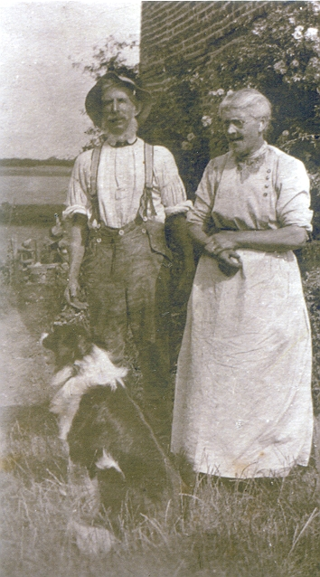
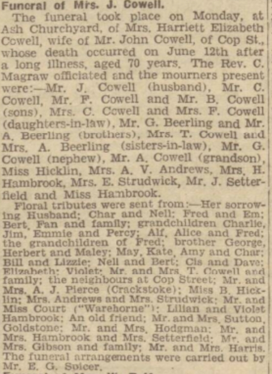
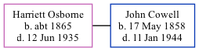

Harriett Elizabeth Cowell (née Osborne) c1865 - 1935
[ Home ] | [ Calendar ] | [ Surnames Index ] | [ Family History ], Harriett Osborne, the wife of John Cowell (the great-grandfather of Nigel Horne), was born in Goldstone, Ash, Kent, England <i>c.</i> 1865<span class="citation">1,2,3,4,5</span>. She married John (a farm waggoner) in Thanet, Kent, England around Nov 1899<span class="citation">7</span>.</p><p>Harriett spent all of her life in Kent, England. Throughout her life, she lived in several places around the county: in Upstreet on Apr 5, 1891<span class="citation">9</span>; at 2 Woodchurch Farm Cottages, Acol on Mar 31, 1901<span class="citation">10</span>; at Woodchurch Farm, Acol on Apr 2, 1911<span class="citation">11</span>; and at Sandhills, Ash on Jun 19, 1921<span class="citation">4</span>. <p>She died on Jun 12, 1935 in Eastry, Kent<span class="citation">6</span> and was buried at St Nicholas, Ash, Kent on Jun 17, 1935<span class="citation">8</span>.
Citations
- 1891 England Census Online publication - Provo, UT, USA: The Generations Network, Inc., 2005.Original data - Census Returns of England and Wales, 1891. Kew, Surrey, England: The National Archives of the UK (TNA): Public Record Office (PRO), 1891. Data imaged from The National
- 1901 England Census Online publication - Provo, UT, USA: The Generations Network, Inc., 2005.Original data - Census Returns of England and Wales, 1901. Kew, Surrey, England: The National Archives of the UK (TNA): Public Record Office (PRO), 1901. Data imaged from the National
- 1911 England Census Online publication - Provo, UT, USA: Ancestry.com Operations, Inc., 2011.Original data - Census Returns of England and Wales, 1911. Kew, Surrey, England: The National Archives of the UK (TNA), 1911. Data imaged from the National Archives, London, England.
- 1921 Census Of England & Wales - Findmypast (was age 56 and the wife of the head of the household)
- England & Wales deaths 1837-2007 - Findmypast
- England & Wales, Death Index: 1984-2005 Online publication - Provo, UT, USA: The Generations Network, Inc., 2007.Original data - General Register Office. England and Wales Civil Registration Indexes. London, England: General Register Office. © Crown copyright. Published by permission of the Cont
- England & Wales, FreeBMD Marriage Index: 1837-1915 Online publication - Provo, UT, USA: The Generations Network, Inc., 2006.Original data - General Register Office. England and Wales Civil Registration Indexes. London, England: General Register Office. © Crown copyright. Published by permission of the Cont
- Kent, Canterbury Archdeaconry burials 1538-1988 - Findmypast
- 1891 England, Wales & Scotland Census - Findmypast (was age 26 and a housekeeper in the household)
- 1901 England, Wales & Scotland Census - Findmypast (was age 36 and the wife of the head of the household)
- 1911 Census for England & Wales - Findmypast (was age 45 and the wife of the head of the household)
Media
John Cowell and Harriet Osborne

Harriett Osborne - funeral notice - Dover Express

Harriett Osborne - gravestone

England & Wales deaths 1837-2007 - BMD/D/1935/2/AZ/000190/107
Canterbury Burials - GBPRS/CANT/D/95453063
1911 England, Wales & Scotland Census Transcription - GBC-1911-RG14-04481-0159-2
1901 England, Wales & Scotland Census Transcription - GBC-1901-0005520259
England & Wales marriages 1837-2005 - BMD/M/1899/4/AZ/000290/254
1891 England, Wales & Scotland Census - GBC/1891/0005761369
1921 Census of England & Wales - GBC/1921/RG15/04492/0313/02
Family Tree
Generated by Ged2Site. Last updated on Jul 20, 2025